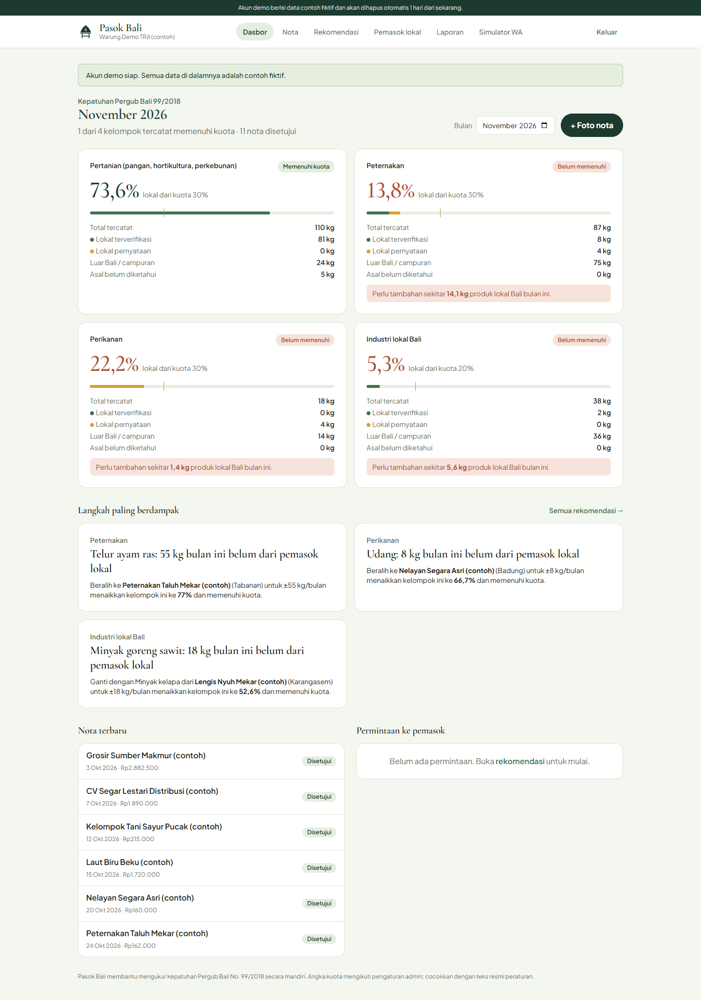
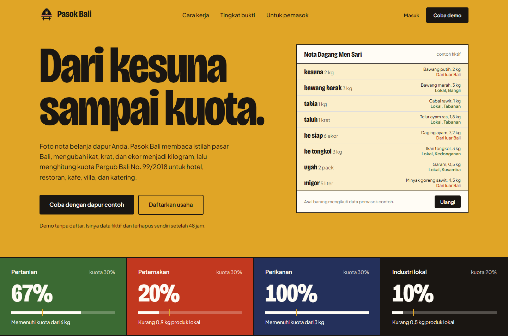
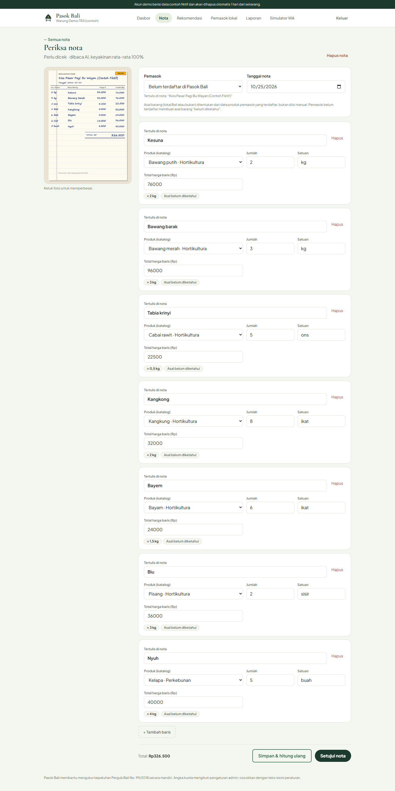
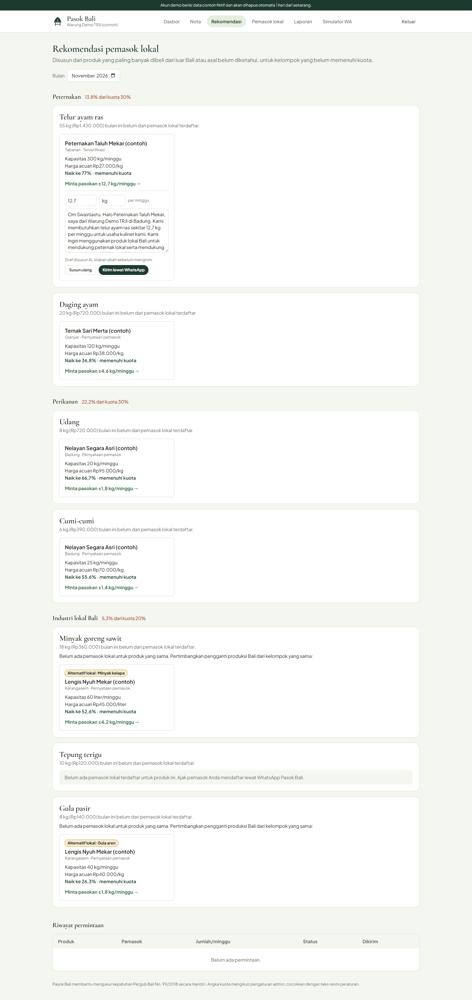
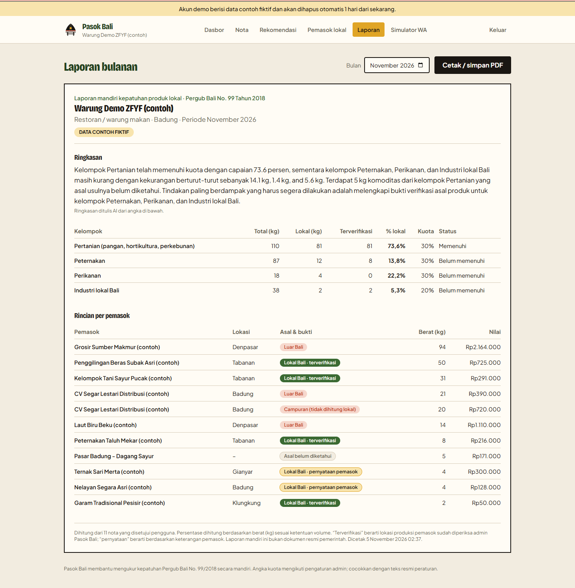

Proposal Solusi & MVP AI Web, Bali DigiFest 2026
Dari nota belanja dapur, sampai kuota produk lokal Bali.
Aplikasi web berbasis AI yang membaca foto nota belanja hotel, restoran, kafe, villa, dan katering untuk mengukur sendiri kepatuhan Pergub Bali No. 99/2018, lalu menghubungkan kekurangannya dengan petani, peternak, nelayan, dan UMKM Bali lewat WhatsApp.

Peraturan Gubernur Bali No. 99 Tahun 2018 meminta hotel, restoran, dan katering menyerap produk pertanian, peternakan, perikanan, dan industri lokal Bali dengan kuota volume minimal per kelompok. Aturannya jelas, tetapi mengukurnya di dapur tidak mudah.
Bukti belanja harian datang dalam bentuk struk toko, nota kios pasar tulisan tangan, dan faktur pemasok. Isinya memakai singkatan dan istilah Bali (kesuna, taluh, be siap, migor) dengan satuan campur: ikat, krat, ekor, sisir, liter. Padahal kuota dihitung dari berat, dan asal barang (lokal atau luar Bali) tidak tertulis di nota.
Rekap manual di spreadsheet memakan waktu, rawan salah konversi, tidak membedakan klaim asal barang dari yang terverifikasi, dan berhenti di angka. Saat kuota kurang, staf belanja tidak tahu petani atau peternak lokal mana yang siap memasok. Di sisi lain, produsen lokal hidup di WhatsApp dan enggan memasang aplikasi baru.
Kiri: tulisan di nota. Kanan: yang dibutuhkan untuk menghitung kuota, yaitu produk baku, berat, dan asal barang.
Kuota minimal volume yang dipakai sebagai angka bawaan. Angka disimpan di basis data dan dapat diubah admin bila berbeda dengan naskah resmi di JDIH Provinsi Bali.
Pemilik dan staf belanja restoran, warung, kafe, hotel, villa, dan katering di 9 kabupaten/kota Bali.
Butuh tahu posisi kuota tanpa rekap manual, dan tahu harus membeli dari siapa agar kuota terpenuhi.
Produsen lokal yang ingin menjual rutin ke hotel dan restoran.
Butuh cara mendaftar dan menerima pesanan yang sesederhana chat WhatsApp, dalam bahasa sehari-hari.
Memverifikasi pemasok, menambah pemasok yang mendaftar lewat kunjungan, dan menyesuaikan angka kuota.
Butuh membedakan klaim asal barang dari pemasok yang sudah diperiksa.
Pasok Bali membantu usaha kuliner dan akomodasi mengukur sendiri serapan produk lokalnya dari foto nota, lalu menutup kekurangan kuota dengan pemasok lokal lewat WhatsApp. Pasok Bali adalah alat bantu internal usaha, bukan alat pengawasan pemerintah.
Setiap kilogram dipisah menurut tingkat bukti: lokal terverifikasi pernyataan pemasok luar Bali dan asal belum diketahui. Garis tipis emas menandai batas kuota, dan kartu "Langkah paling berdampak" menunjukkan pembelian mana yang paling cepat menaikkan persentase.
Dasbor akun demo di pasokbali.arisantika.tech, November 2026. Semua data fiktif.
Pemasok tidak perlu akun atau aplikasi. Chat dibuka dengan kata PASOK, lalu boleh dicicil dalam bahasa sehari-hari.
AI dipakai di tempat aturan biasa gagal: membaca tulisan tangan, memahami istilah pasar Bali, dan mengerti chat bebas petani. Model utama Google Gemini gemini-3.5-flash-lite (vision dan keluaran JSON), dengan cadangan otomatis gemini-flash-lite-latest dan gemini-3.6-flash saat server sibuk. Perhitungan kilogram, persentase kuota, dan rekomendasi tidak memakai AI, tetapi aturan pasti yang bisa diperiksa ulang.
| Tugas AI | Masukan → keluaran | Mengapa perlu AI | Bila AI gagal |
|---|---|---|---|
| Baca nota | Foto nota + daftar produk kamus → JSON pemasok, tanggal, baris barang (nama, jumlah, satuan, harga, keyakinan) | Nota pasar ditulis tangan dan formatnya tidak seragam | Nota ditandai perlu dicek, diisi lewat formulir |
| Kelompokkan barang | Nama barang mentah → produk kamus, kelompok kuota Pergub, berat per satuan | Istilah Bali dan singkatan tak terbatas (tabia krinyi, bw mrh) | Kamus 124 produk dan 511 alias; sisanya ditandai |
| Daftar pemasok WA | Chat bebas, boleh dicicil → nama, kabupaten, produk, kapasitas per minggu, harga, asal produksi | "Sehari 10 ekor", "3 kwintal", "di Kintamani" harus dipahami dan dikonversi | Pengurai pola untuk kabupaten, angka, satuan, harga |
| Asisten WA | Pertanyaan pemasok + data pemasok itu sendiri → jawaban singkat, atau niat daftar diteruskan ke pendaftaran | Petani bertanya dengan kalimatnya sendiri, bukan perintah baku | Teks bantuan baku |
| Draf pesan | Data usaha, produk, jumlah → pesan permintaan pasokan sopan dengan salam Bali | Pesan personal lebih mungkin dibalas | Templat pesan |
| Ringkasan laporan | Angka kuota yang sudah dihitung → 3–5 kalimat tanpa angka baru | Pemilik usaha butuh inti laporan, bukan tabel | Ringkasan berbasis aturan |
Uji memakai 10 gambar nota fiktif digital, bukan foto kamera. Akurasi pada foto nota asli yang miring, buram, atau kusut belum diukur.
Semua fitur berikut sudah berjalan di pasokbali.arisantika.tech dan bisa dicoba juri tanpa mendaftar lewat tombol Coba demo, yang membuat ruang uji pribadi berisi data fiktif selama 48 jam.
Alur utama. Foto nota disimpan di penyimpanan privat, lalu diproses di latar belakang: AI membaca, kamus dan pengelompok AI mencocokkan barang, satuan dikonversi ke kilogram. Setelah pengguna menyetujui, kuota dan rekomendasi dihitung langsung dari basis data.
Keamanan. Data tiap usaha dipisah dengan global scope per usaha dan diuji otomatis. Webhook WA memakai alamat rahasia dan dibatasi laju per nomor. 46 tes otomatis (Pest) dijalankan dan lulus sebelum setiap deploy.
| Aspek | Rekap manual di spreadsheet | Pasok Bali |
|---|---|---|
| Pencatatan nota | Ketik ulang baris demi baris | Foto nota dibaca AI, pengguna tinggal memeriksa |
| Istilah dan satuan | Diseragamkan dan dikonversi sendiri | 511 istilah Bali dikenali, satuan pasar otomatis jadi kg, dan belajar dari koreksi |
| Tingkat bukti | Klaim dan bukti tercampur | Terverifikasi, pernyataan pemasok, dan belum diketahui dipisah |
| Saat kuota kurang | Berhenti di angka | Pemasok lokal pengganti, simulasi kenaikan persen, pesan WA siap kirim |
| Produsen lokal | Tidak terhubung | Daftar dan menerima pesanan cukup lewat chat WhatsApp |
| Stack | PHP 8.3+, Laravel 13, Blade, Tailwind CSS 4, Alpine.js 3, Vite 8, MariaDB/SQLite, Pest |
| AI | Google Gemini (lihat bagian 4), cadangan opsional Anthropic Claude claude-haiku-5-5 |
| Layanan | Fonnte WhatsApp API, hosting cPanel dengan HTTPS |
| Data | Kamus produk dan istilah disusun tim. Semua data demo fiktif |
| Pra-eksisting | Pola gateway AI dan pengirim WA Fonnte diadaptasi dari proyek tim sebelumnya, Harlok |
| Asisten koding | Claude Code (Anthropic) dan Google Gemini (Antigravity); seluruh kode diuji dan ditinjau tim |
| Aset | Huruf Cormorant Garamond dan Plus Jakarta Sans (SIL OFL 1.1); logo dan ilustrasi buatan tim |
Rincian lengkap di docs/DISCLOSURE.md pada repository.
| Website MVP | https://pasokbali.arisantika.tech |
| Repository GitHub | https://github.com/BanhAri01/pasok_bali (versi yang dinilai: tag v1.0-submission) |
| Cara mencoba | Klik Coba demo di halaman depan, tanpa daftar. Bot WA: kirim PASOK ke 0851-3364-2784. |
| Video demo | Disiapkan untuk tahap final |
Tangkapan layar dari pasokbali.arisantika.tech dengan akun demo, November 2026. Semua data fiktif.

Halaman depan dengan contoh nota yang dibaca

Layar periksa nota hasil baca AI

Rekomendasi pemasok lokal dan draf pesan WA

Laporan bulanan dengan ringkasan AI